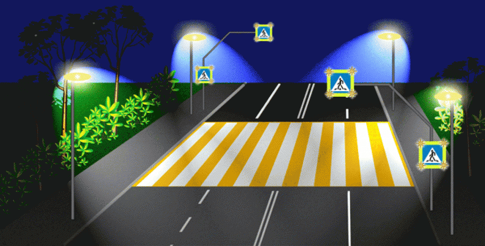
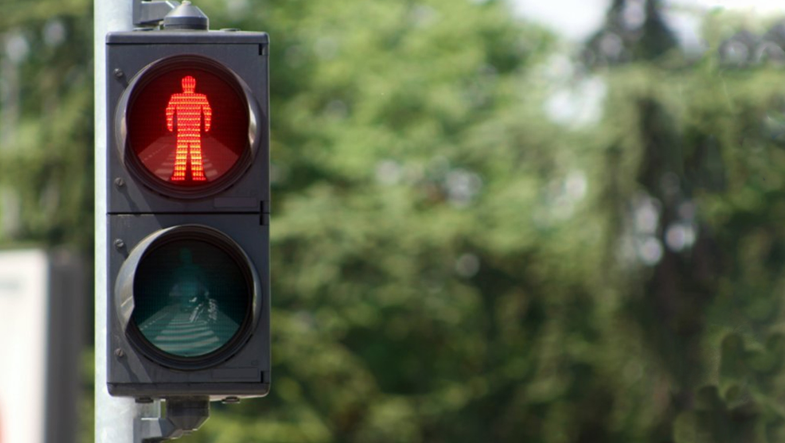
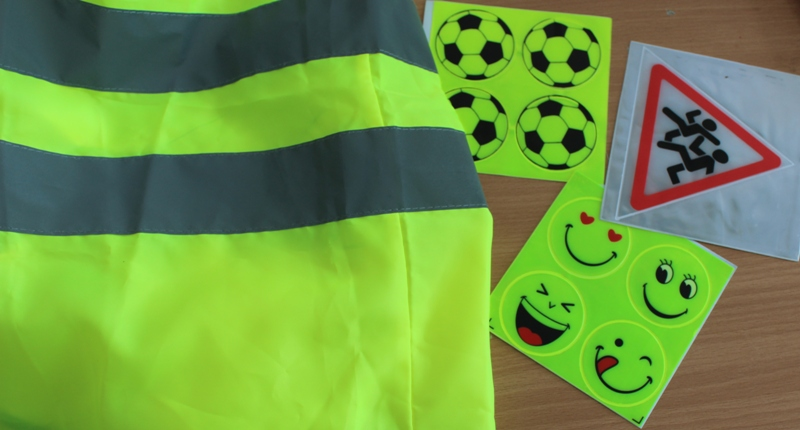
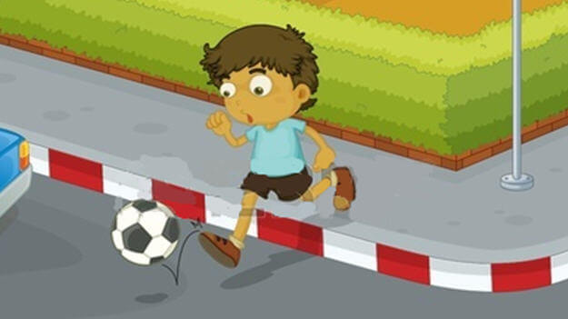
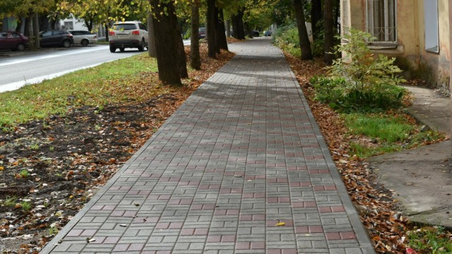

Основные правила дорожного движения
Переходи дорогу по зебре
Всегда переходи дорогу только по пешеходному переходу. Перед тем как ступить на проезжую часть, посмотри сначала налево, потом направо, чтобы убедиться, что машины остановились.
Запомни: даже на зебре нужно быть внимательным!
Светофор - твой друг
Переходи дорогу только на зеленый сигнал светофора. Красный сигнал означает "стой", желтый - "приготовься", зеленый - "можно идти". Даже если горит зеленый, убедись, что все машины остановились.
Светофор для пешеходов часто имеет человечка: красный - стоит, зеленый - идёт.
Будь заметен в темноте
В темное время суток носи одежду со светоотражающими элементами или специальные браслеты. Это поможет водителям тебя заметить. Переходить дорогу в темноте нужно особенно внимательно.
Светоотражатели делают тебя видимым для водителей с расстояния 150 метров!
Не играй у дороги
Играй только в специально отведенных местах: парках, дворах, детских площадках. Никогда не играй на тротуаре рядом с проезжей частью и тем более на самой дороге. Мяч может выкатиться на дорогу - не беги за ним, сначала посмотри по сторонам.
Игры у дороги - одна из главных причин детского травматизма!
Держись правой стороны
Ходи по тротуару, придерживаясь правой стороны, чтобы не мешать другим пешеходам. Если тротуара нет, иди по обочине навстречу движению транспорта, чтобы видеть приближающиеся машины. В темное время суток обязательно используй светоотражатели.
Правило: транспорт едет по правой стороне, пешеходы идут навстречу.